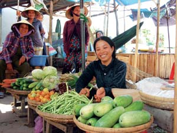

Microlending: A Little Loan Goes A Long Way
Kiva.org allows individuals to help entreprenuers in the developing world overcome poverty through micro-loans.
By Bill Moore
October/November 2007
When Muhammad Yunus, a Bangladeshi economics professor and the 2006 Nobel Peace Prize winner, started his experiment of loaning tiny sums of money to impoverished villagers in 1976, he set in motion a new financial industry known as micro-lending.
It was the plight of a villager named Sufia Begum that inspired Yunus to launch what would become the Grameen Bank, which was founded on the principle that small amounts of capital can enable the poor to lift themselves out of poverty. Begum was a 21-year-old mother of three who supported her family by weaving strips of bamboo into stools. The bamboo was purchased with a loan from a middleman, and at the end of the day, she had to sell the finished stool back to him to repay the loan. Her profit for one day’s hard labor? Two cents!
In 2005, Matt and Jessica Flannery revolutionized micro-lending with Kiva.org. The San Francisco Bay-area couple developed the Web site to enable those of us who enjoy the privilege of America’s wealth to “meet” and help needy borrowers in the developing world. Working through more than 60 partnering microfinance institutions in some 35 countries that screen and mentor borrowers, Kiva is the first and only Internet microfinancer that allows you to select whom you wish to fund and how much you wish to loan. The loans are then distributed on a monthly basis to borrowers.
The local microfinance institutions post personal information and photos of the borrowers, along with a description of their business plans on the Web site, so if you are a Kiva lender, you can get to know who your loan is assisting. Most of Kiva’s loans go to Africa, where the majority of funds are for tiny agriculture-related startups: money to buy a cow, feed for chickens or a peanut grinder. In South America and Central Asia, the loans are more retail in nature: corner food stalls, bicycle repair shops or tailors needing cloth.
According to Fiona Ramsey, Kiva’s public relations director, the average loan amount is $80 - often spread over several borrowers - and the average time it takes to fill a loan request on the site is one and a half days.
To date, no loan requests have gone unfunded, and of the 1,700 loans that have matured since the inception of the program, Kiva’s default rate is 0.2 percent. Borrowers understand, and even insist, that the funds are not charity, and that they will be paid back at the end of the contract period.
In the three years since its launch, 58,000 people (including this author) have loaned a total of $9.5 million to 14,400 entrepreneurs in 35 countries, and those numbers increase daily. Lenders have the option when the loans mature to take their funds out of Kiva or re-lend it. While lenders currently don’t collect interest on their loans, Kiva is looking at implementing a modest interest rate to help service the loans and attract more lenders.
Grameen Bank reports that, according to third-party studies, 5 percent of impoverished borrowers rise above the poverty level each year with the help of micro-loans. There are millions more like Begum who simply ask for a chance to help themselves. You can meet some of them at www.kiva.org.
 DALIA PALCHIK Komlan Semenou's furniture shop in Togo benefits from small loans arranged by Kiva.org. |
 KIVA.ORG Thuan Nguyen Thi's Vietnamese market stand benefits from small loans arranged by Kiva.org. |
|